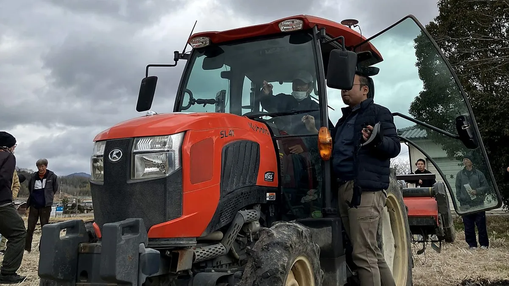
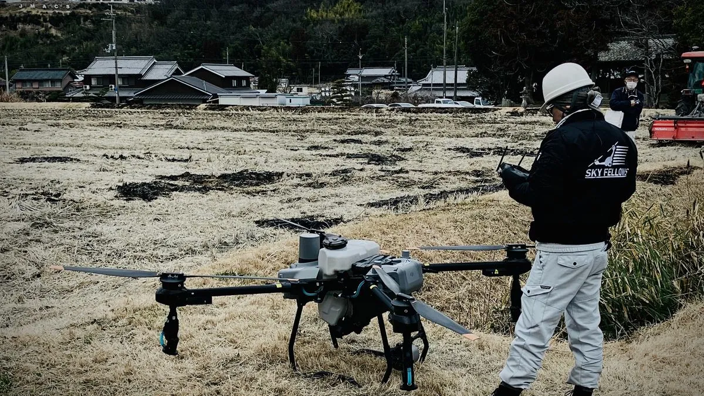
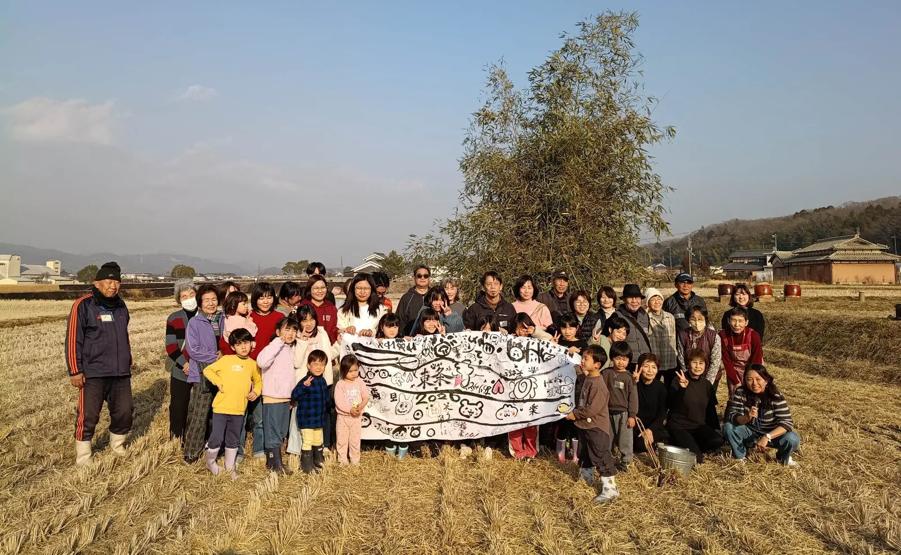

RTK・VRSとは？
自動操舵トラクターで変わる5つのこと ― 農業DX“数センチの革命”

この記事の要点
- RTKは、基準局からの補正情報を使って、位置の誤差を2〜3cm程度に抑える測位技術です。
- VRSは、自前の基地局を建てずに、インターネット経由で補正情報を受け取る方式です。
- 自動操舵は今あるトラクターに後付けでき、疲労・技量の差・ムダな走行を減らせます。
- 導入を阻んでいるのは機械の値段よりも、「人にかかっているコストが見えないこと」です。
「GPSの位置が何かズレてる気がする…」
カーナビでもよくあるこの“数メートルの誤差”が、農業においては収量や品質を左右する致命的な問題になります。畝（うね）が曲がる、散布ムラが出る、蛇行走行で燃料が無駄になり、結果的に後工程の作業効率が著しく低下するのです。
こうした誤差を劇的に解消する農業DXのコア技術が「RTK（リアルタイム・キネマティック測位）」です。
1. RTKとは ― 誤差2〜3cmで走る農機の測位技術
通常のGPS誤差は数メートルに及びますが、RTKは基地局からの補正信号を受けることで、誤差をわずか2～3cmまで抑えることができる技術です。

つまり、「誰が運転しても、まっすぐ耕せる・まっすぐ植えられる」状態になります。RTKが導入された自動操舵トラクターは、長時間の直進作業でも精度を崩さず、オペレーターの疲労や技量差をほぼゼロにします。まさに自動運転の安定性を支える“縁の下の力持ち”です。
測位方式ごとの誤差の目安
| 方式 | 誤差の目安 | 主な使い道 |
|---|---|---|
| 単独測位 | 5m程度 | カーナビなど |
| DGPS | 1m程度 | 走る経路を画面で案内するGNSSガイダンス |
| RTK・VRS | 2〜3cm程度 | ハンドル操作まで自動で行う自動操舵 |
2. VRSとは ― 基地局を建てずに使える“仮想基準点”
RTKを使いたくても、「地域によっては基地局の電波が弱い」という課題があります。しかし、基地局の増設には莫大な設備投資が必要です。
そこで登場するのが「VRS（Virtual Reference Station：仮想基準点方式）」です。

VRSは簡単に言えば、手で持ち運べる“ミニ基地局”です。設置した場所で電源をオンにすれば、「ここだけ電波が悪い」という地点をピンポイントで改善し、数センチ単位で正確に測位します。トラクターのみならず自動操縦ドローン等にも使える汎用性があり、GPSとSIMさえあれば利用可能です。
仕組みをもう少し正確に説明します。VRSは、全国に約1,300か所ある電子基準点のデータをもとに、作業している場所のすぐ近くに“仮想の基準点”を計算でつくり、その補正情報をインターネット回線で受け取る方式です。現場に持ち込むのは受信機と通信端末だけで済むため、私たちは“持ち運べる基地局”と呼んでいます。
RTKの補正情報の受け取り方
| 方式 | 補正情報の届け方 | 使える範囲 |
|---|---|---|
| RTK（デジタル無線方式） | 自前や地域の基準局から、無線で受け取る | 基準局から半径2〜5kmほど |
| RTK（インターネット方式） | 基準局の補正情報を、インターネット経由で受け取る | 通信がつながる範囲 |
| VRS（仮想基準点方式） | 電子基準点のデータから計算した補正情報を、インターネット経由で受け取る | 通信がつながる範囲 |
基地局を新しく建てなくても使えることが、VRSのいちばんの利点です。圃場が点在する地域や、基地局の電波が届きにくい谷あいでも、通信さえつながれば同じ精度で作業できます。
3. 自動操舵トラクターがもたらす5つの変化
RTK・VRSを使ったスマート農業は、単なる“便利装置”にとどまりません。現場に以下の5つの大きな変化をもたらします。
- オペレーターの疲労を激減させる：長時間の直進作業でも精度がブレず、体力の消耗を極限まで抑えられます。
- 作業を“属人化”させない：経験不足の新人でもベテラン並みの精度で作業でき、人材採用のハードルが下がります。
- ムダ走行が減り、燃費が改善する：蛇行や重複作業がゼロになるため、燃料コストが直接的に下がります。
- 作業時間の短縮と再作業の削減：日没後でも精度が落ちないため、夜間作業の効率と安全性が担保されます。
- トラクターの寿命が延びる可能性：ムダな負荷が減ることで機材の長寿命化が図れ、将来的な投資頻度を下げられる可能性があります。
4. 自動操舵の導入が進まない“最大の壁”
メリットが多いにもかかわらず、なぜ導入が進まないのでしょうか。多くの農家が直面している本当の問題は、「人にかかっているコストが見えないこと」です。
早朝の水管理、炎天下での重労働、繁忙期の休みゼロ。これらは本来すべて「コスト」ですが、農家の使命感で吸収され、数字として経営に現れません。そのため「機械は高いから…」という理由で導入が遅れ、産業の構造的問題が放置されてしまうのです。
5. 農業が“地域の未来をつくる産業”へ
農業は本来、地域の強みとなり、若者が戻る理由をつくり、地方の未来を支える基幹産業であるべきです。だからこそスマート農業は、単なる効率化ではなく、この価値を取り戻すための“次のステージへの入口”になります。
使命感に依存しない働き方を実現し、努力が正しく報酬へつながる仕組みを整える。RTKやVRSがもたらす“数センチ”の精度は、農業の働き方を変え、地域の未来そのものを変えるきっかけになります。
最大の壁は、技術やコストではなく、変化を受け入れる側の意識にあります。
「どうせ」農業は儲からない。「どうせ」この街には何もない。「どうせ」変わらない。
その「どうせ」の一言で、どれだけの未来が閉じてきたでしょうか。
失敗したら成功するまでやり直せばいい。ないならつくればいい。変わらないなら自分で変えればいい。東条地域には、“他では絶対に真似できない”土地の力と、受け継がれてきた知恵、そして挑戦を楽しむ人の心があります。
よくある質問
Q. RTKとVRSの違いは何ですか？
RTKは、基準局からの補正情報で位置の誤差を2〜3cm程度に抑える測位の方法です。VRSはその補正情報の届け方のひとつで、電子基準点のデータから仮想の基準点をつくり、インターネット経由で受け取ります。自前の基地局が要らない点が違いです。
Q. 普通のGPSとは、どのくらい精度が違いますか？
メーカーの解説資料では、補正のない単独測位の誤差は5m程度、DGPSは1m程度、RTKやVRSは2〜3cm程度とされています。
Q. 今使っているトラクターにも付けられますか？
受信機・モニター・モーター付きハンドルを後付けする製品があります。対応する機種や費用はメーカーや販売店によって異なるため、個別に確認が必要です。
Q. VRSを使うには何が必要ですか？
VRSに対応した受信機（ガイダンスや自動操舵の機器）と、スマートフォンのテザリングや専用端末などのインターネット回線、補正情報サービスの利用契約が必要です。

この記事を書いた「とうじょうRMO」について
岡本・森・南山の3地区が協力し、農地を守り、地域資源を活かし、暮らしを支える農村型地域運営組織（農村RMO）です。スマート農業とコミュニティの力で、山田錦の産地を次の世代へつなぐ挑戦をしています。
この挑戦の目撃者になりませんか？
とうじょうRMOでは、スマート農業の活用を含め、地域資源を守り抜くための新しい仕組みづくりに挑んでいます。
私たちの活動の「いま」を、まずは公式LINEから覗いてみてください。